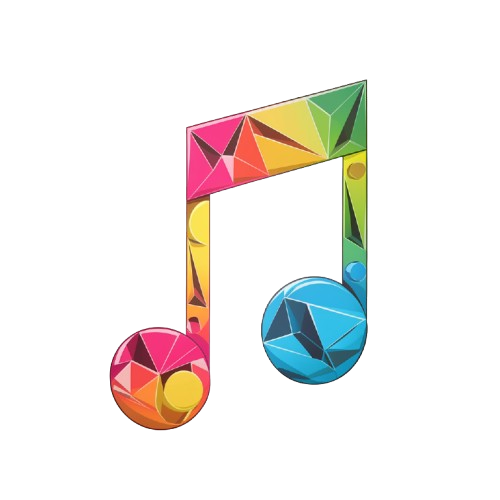
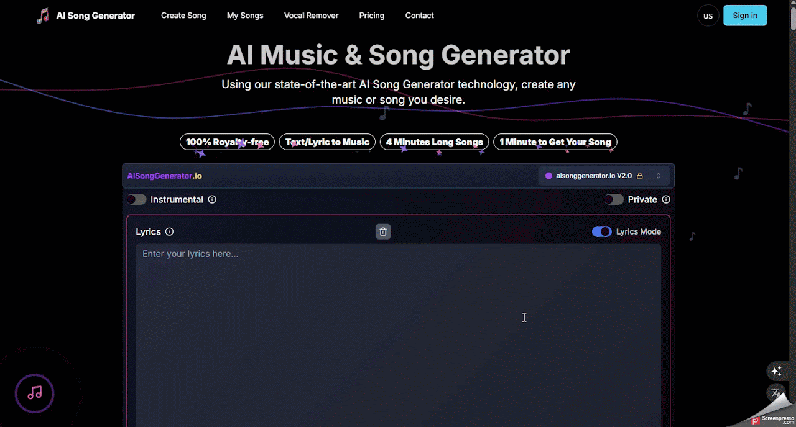

AI Song Generator
Auxiliar o professor na criação de músicas educativas personalizadas para reforçar conteúdos curriculares de forma lúdica.
Ficha técnica
Visão geral
O que é o AI Song Generator?
O AI Song Generator é uma ferramenta baseada em IA que permite criar músicas originais a partir de descrições textuais ou letras fornecidas pelo usuário. Com suporte a diversos estilos musicais e opções de voz, a plataforma gera faixas de até 4 minutos, prontas para download e uso em projetos pessoais ou comerciais. Além disso, todas as músicas geradas são livres de royalties.
Fluxo de uso
Como utilizar o AI Song Generator
Etapa 1
Acessando o AI Song Generator
- Acesse o site oficial: https://aisonggenerator.io/.
- Crie uma conta gratuita:
- Clique em "Sign in" e registre-se usando seu e-mail ou conta do Google.
- Faça login:
- Após o cadastro, entre na plataforma com suas credenciais para acessar todos os recursos disponíveis.

Etapa 2
Criando sua Música com IA
- Escolha o Tipo de Entrada:
- Texto para Música: Descreva o estilo, humor ou tema da música que deseja criar.
- Letra para Música: Forneça letras completas para que a IA componha a melodia correspondente.
- Personalize os Detalhes da Música:
- Título: Dê um nome à sua canção.
- Estilo e Gênero: Escolha entre diversos gêneros musicais, como pop, rock, jazz, entre outros.
- Humor: Defina o tom emocional da música, como alegre, melancólico, energético, etc.
- Voz: Selecione entre voz masculina, feminina ou instrumental.
- Tempo: Ajuste o andamento da música conforme sua preferência.
- Gere sua Música:
- Após configurar todos os parâmetros, clique em "Generate" para que a IA crie sua música personalizada.
- A geração da música leva cerca de 1 minuto.

Etapa 3
Baixando e Compartilhando sua Música
- Download: Após a geração, você pode baixar a música em formato MP3.
- Licença Comercial: Caso deseje utilizar a música para fins comerciais, é possível adquirir uma licença apropriada.
- Compartilhamento: Compartilhe sua criação diretamente em plataformas como YouTube, TikTok ou Instagram.